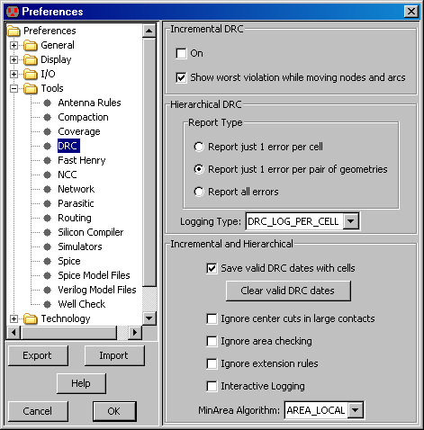

|
To control the DRC,
use the DRC Preferences (in menu File / Preferences..., "Tools" section, "DRC" tab).
By default, the incremental design-rule checker is on.
To turn it off, uncheck the "On" checkbox in the "Incremental DRC" section.
There are three levels of checking that can be requested for the Hierarchical DRC.
Each level of checking consumes more time and finds more errors.
|  |
- "Report just 1 error per cell" tells the system to stop checking a cell
after the first error has been found.
By using this option, you can more quickly determine which cells in the design are correct,
without knowing exactly where the errors lie.
Then, you can go to the cells with errors and do a more complete check.
- "Report just 1 error per pair of geometries" is the default.
The algorithm works by checking design rules per each possible pair of geometries and it stops when the first
violation for a given pair is found in this mode.
- "Report all errors" tells the system to continue checking all possible violations in a pair of geometries,
even if an error has already been found.
This is the exhaustive mode and therefore time consuming that will report all violations found.
The design-rule checker remembers the date of the last clean check.
If a cell has not changed since then, it does not need to be rechecked.
This date information can be stored in the libraries (requiring them to be saved)
or can be held only in Electric's memory (requiring them to be rechecked if Electric is restarted).
You can also request that all date information be removed so that a full recheck is done.
To see which cells have passed DRC,
use the General Cell Lists... command (in menu Cell / Cell Info)
A "D" is shown in on the right for cells that are DRC current
(see Section 3-7-1).
MOS contact nodes automatically increase the number of cuts when they grow larger
(see Section 7-4-1).
Because of this,
very large contact nodes can create excessive work for the design-rule checker as it examines each of the cuts.
To save time, check the "Ignore center cuts in large contacts" check box,
which will examine only the cut layers around the edges of contact nodes.
DRC rules for new technologies might require special rules, which can be time consuming.
To ignore these errors, check "Ignore area checking" (for minimum area rules) and
"Ignore extension rules" (for special overlap rules).
After DRC is complete, errors are available in the the cell explorer.
If you wish to see errors while DRC is running, check "Interactive logging",
and the errors will appear incrementally.